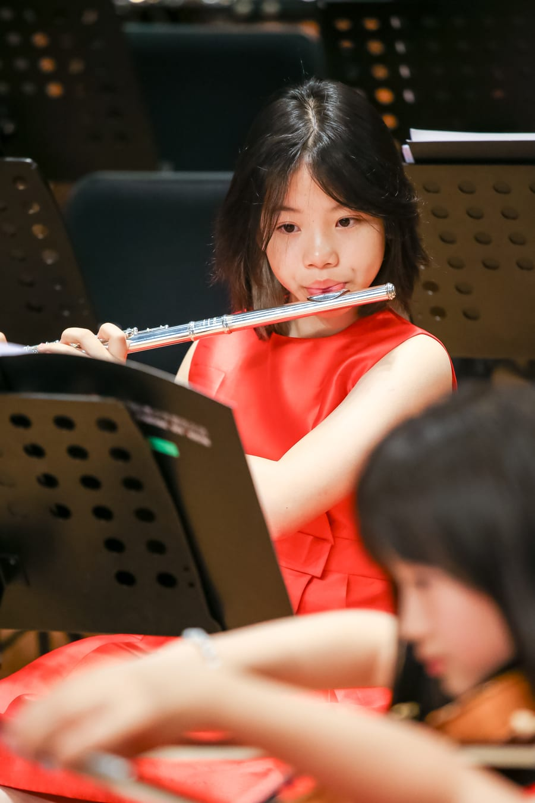
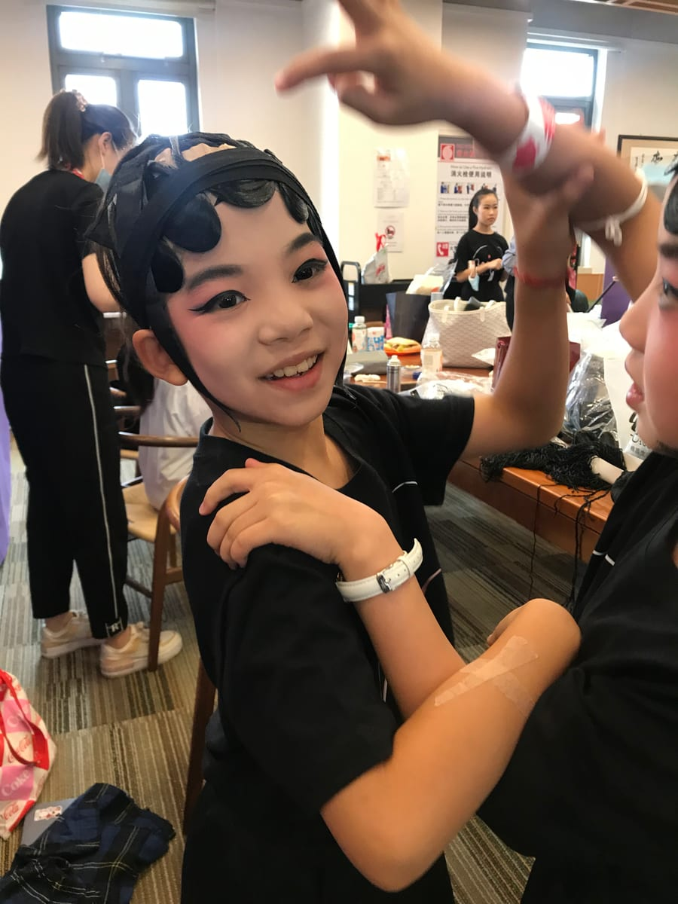
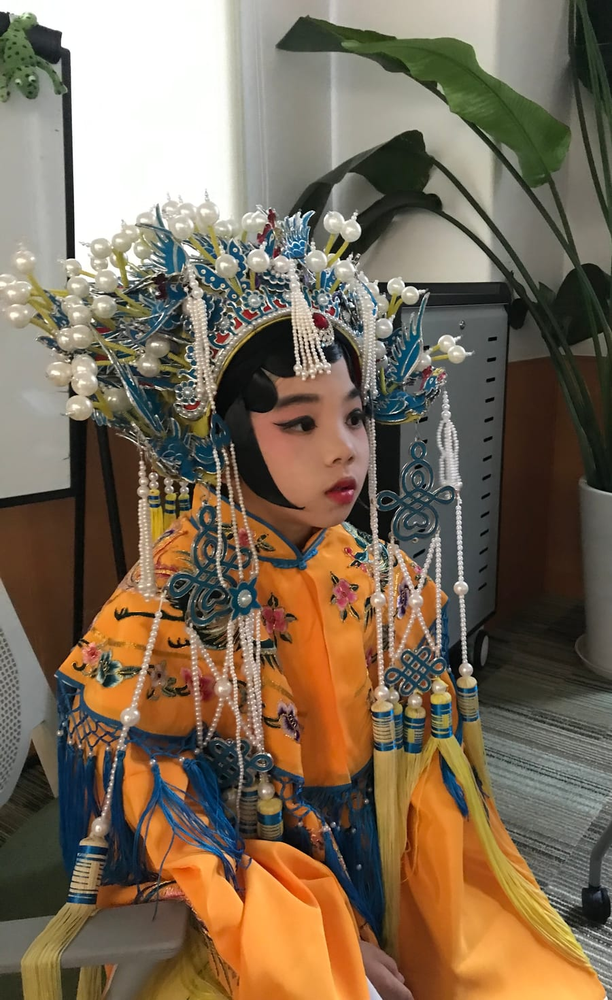
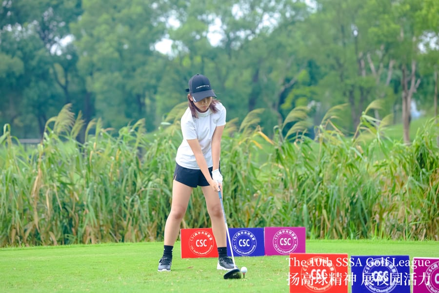

I’m a ninth grader in Shanghai. Most weeks, my days move between the orchestra hall, a Peking opera rehearsal room, the golf course, and a notebook that keeps filling up with questions.
This is where I keep the things I care about — the music, the stage, the game, and the ideas I can’t stop thinking about.
When I was little I was the kid with a hundred things going on at once — full of energy, curious about everything, and honestly pretty easy to distract.
Somewhere between daily flute practice and long afternoons on the range, I learned to enjoy the slow part: showing up, doing a small thing well, and doing it again tomorrow. Nobody has to remind me to practise anymore.
The things I love look very different from each other. A flute section, a Peking opera stage and a golf course don’t seem to have much in common, but each one has taught me to listen — to an ensemble, to a teacher, to a teammate, or to what a missed shot is trying to tell me. I like finding the threads that connect them.
Away from all that, I play football, ping pong, badminton and baseball with friends, go hiking whenever I can, and try to be someone who hears other people out and learns from mistakes instead of hiding from them.
HomeShanghai
PlaysFlute & piccolo
On stageJing Ju, spoken drama, musicals
OutdoorsGolf, football, hiking
02Music
Flute & piccolo
I’ve played flute and piccolo for more than four years. About forty-five minutes of practice every day is the quiet anchor of my routine — long tones, scales, and whichever passage I’m still not happy with.
About twice a year I perform with the Shanghai International Youth Orchestra at Jaguar Shanghai Symphony Hall. An orchestra teaches you quickly that the right notes are only the beginning: the music comes alive when everyone stops thinking only about their own part and starts listening to each other. Playing principal flute and piccolo, a lot of my job is exactly that — listening, and breathing in at the right moment so the people around me can come in with me.
I’ve also played in solo and team competitions, showcases and festivals, and placed second in an individual flute competition.
Our flute ensemble on stage in concert. 0:40 · sound on
In my seat in the orchestra, behind a row of music stands.

Rehearsing with the orchestra.
03Stage
Jing Ju & theatre
Orchestra taught me to follow a score exactly. Jing Ju — Peking opera — asked for something completely different.
There’s no music stand to hide behind. The story lives in the flick of a water sleeve, where your eyes land, how far your voice carries to the back row, and exactly where you stand on the stage. Every gesture is stylised, and every one of them means something.
I’ve trained in Jing Ju and in spoken drama (huaju), and performed in a regional competition production of Zhao Shi Gu Er — The Orphan of Zhao. Before that, in Grade 5, I was in an English-language production of the musical Annie.
Practising sleeve and fan work at home when I was younger. 0:44 · sound on

Backstage, halfway through makeup and head-wrap.

Full Jing Ju costume and phoenix-crown headdress.Fan and water-sleeve practice at home.
04Golf
On the course
An iron shot at the SSSA School Golf Invitational Cup.
I’ve played golf since Grade 2, and since Grade 6 I’ve practised about five hours a week.
Almost every round has a plugged lie in a bunker or an approach that lands nowhere near where I aimed. I try to treat those moments as information rather than frustration: what did that swing tell me, and what will I change on the next one? I play to analyse and improve, not just to chase a number.
That habit helps when the pressure is real. In 2024 I finished runner-up in a field of more than a hundred players at an MJGT junior tournament in Shanghai, and I’ve had top finishes in the SSSA campus golf league — third in 2024 and fourth in 2025. In 2025 my school named me Golfer of the Year.
Holding the follow-through at a campus competition.

Lining up a tee shot at the 10th SSSA Golf League.
05Notebook
Questions I keep thinking about
Not essays — just the ideas that keep following me around after class.
i.
Ethics & hard choices
Is the right choice the one with the best outcome, or the one that keeps a promise or a rule? I like testing utilitarian and duty-based (deontological) thinking against hard cases — the trolley problem, or an emergency room with more patients than doctors — and noticing exactly where each one starts to feel wrong.
ii.
History from more than one angle
From the Sui dynasty to the Qing, and across to the British Industrial Revolution, I learn the most when two primary sources disagree. Sometimes I write poems from the point of view of someone living through those moments, to get closer to how it actually felt.
iii.
Maps, rivers & how people live
GDP tells you one thing about a country. HDI, happiness indices, demographics, river systems and climate charts tell you much more. I like looking at where rivers run and where people settle, and asking what progress really looks like for the people living there.